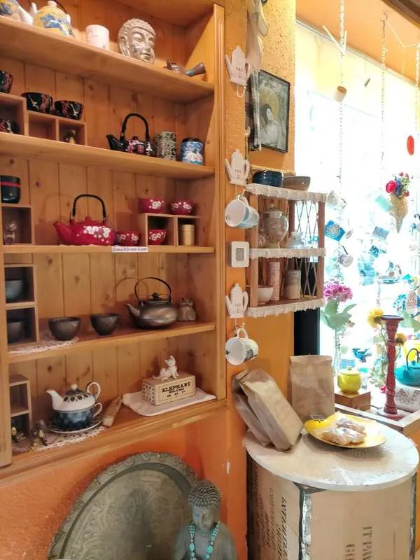
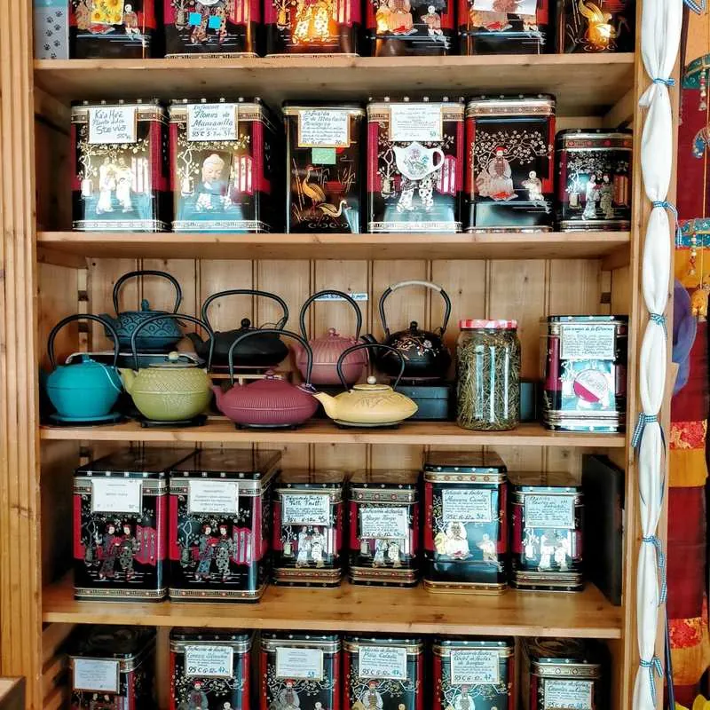
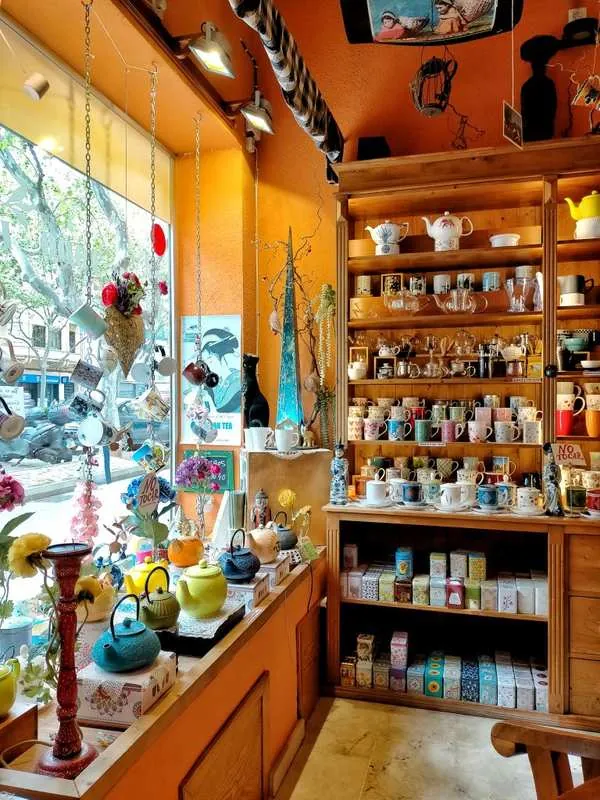
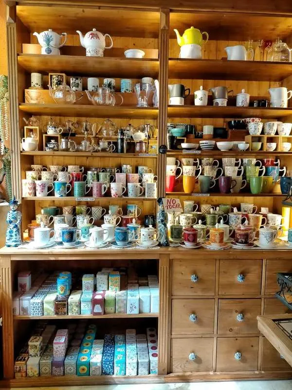
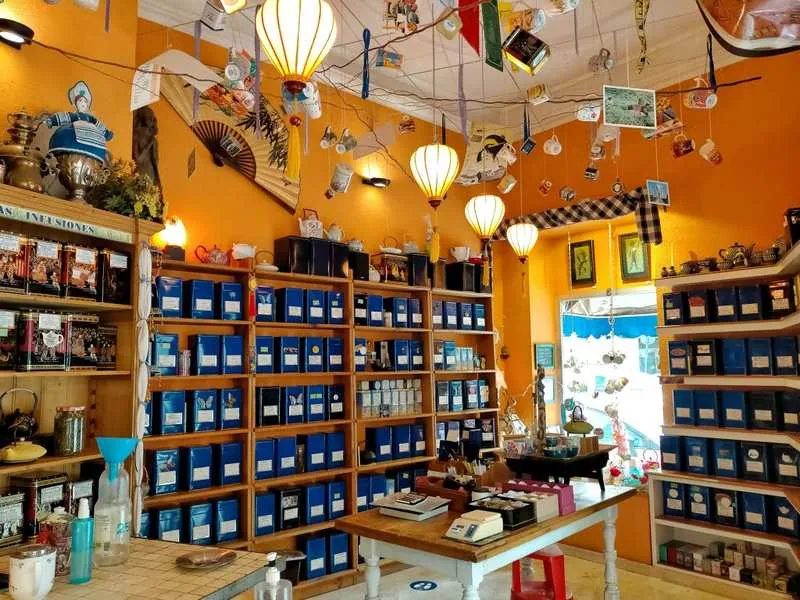

Qué me gusta un buen té o una infusión rica. En cualquier época del año y de cualquier tipo, y es precisamente por eso que Oasis de té ha sido todo un descubrimiento en Palma.
Es una tienda pequeñita situada en 31 de diciembre, pero todo lo que tiene de discreta lo tiene de completa, ya que en ella podréis encontrar cualquier cosa que se os ocurra relacionada con el mundo del té: tés e infusiones de infinitos tipos, tazas, teteras, filtros, cajitas... ¡y hay para todos los gustos!


La tienda lleva abierta 23 años, aunque la actual propietaria, Ana, la gestiona desde hace 12. Tanto ella como Oksana ofrecen una atención super personalizada, y estarán encantadas de explicaros todos los detalles para hacer que saquéis el máximo partido a sus tés.
Esa fue, junto con la gran variedad que tienen, una de las cosas que más me llamó la atención: el conocimiento que ambas tienen sobre el tema. Desde la historia, ingredientes y propiedades de cada uno de sus más de 300 tés hasta la temperatura idónea del agua, la cantidad de té a utilizar o el tiempo de infusionado, y todo ello apuntado también a mano en cada uno de sus paquetitos (muy cuquis) para que no se nos olvide cómo prepararlos de la mejor manera.
Además, también hay libros sobre té repartidos por las estanterías para que los curiosos puedan hojearlos si lo desean mientras eligen qué variedad llevarse o mientras esperan su turno.


Es una tienda ideal para hacer regalitos a los amantes del té, porque tienen cosas preciosas y muy útiles, como juegos de té o teteras de un montón de diseños. Además es un lugar con muchísimo encanto y personalidad, lleno de color y con decoraciones muy originales y cositas colgadas del techo.
Como anécdota Ana me contó que algunas de las tazas que cuelgan del techo son de clientes a los que se les habían roto, y que se las llevan para que formen parte del decorado de la tienda y darles así una segunda vida.
Tés e infusiones
En Oasis de té tienen más de 300 variedades de té de todo el mundo a granel, y de todos los tipos de té que existen:
Rojo
Negro
Verde
Blanco
Azul u oolong
De cada uno de ellos tienen muchísimas opciones, de diferentes países y combinados con distintos ingredientes, y también tienen un buen surtido de rooibos, varios tés matcha e infusiones de hierbas y frutas. Muchos de sus productos son además ecológicos, y algunos de ellos están especialmente indicados para tomar en frío.

Si como a mí os gusta el té en cuanto entréis por la puerta os volveréis locos, porque te dan unas ganas locas de llevártelo todo. Es una lástima que ahora, con las limitaciones provocadas por el coronavirus, no puedan hacer degustaciones, pero antes podíais encontrar siempre teteras preparadas para dar a probar algunos de sus productos, bien calentitos en invierno y fresquitos en verano.
Los que yo me llevé en esta ocasión fueron:
Té rojo con chili
Té rojo choco chai
Rooibos con almendras
Té verde con rosas de Bulgaria
Té negro con especias
Poleo menta
Té oolong crujiente
Té blanco con vainilla
Oro verde (té matcha)
Té berde Japón Genmaicha
Si es que solo con ver los nombres ya apetecen. Y aunque todavía no me ha dado tiempo de probarlos todos, os diré que los que he probado por ahora están brutales y tienen unos aromas increíbles.
Pedidos
Si queréis probar alguno de sus tés o comprar alguno de sus maravillosos productos podéis también hacer pedidos por whatsapp, y os los prepararán para que paséis a recogerlos cómodamente y sin esperas.
Además con todas las compras os regalarán una muestra de algún té que os apetezca probar, para que la próxima vez os sea más fácil escoger.
Es un lugar totalmente recomendable, así que palmesanos y mallorquines en general, os animo a que les hagáis una visita.